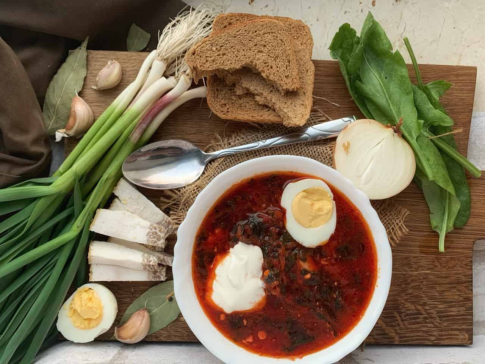
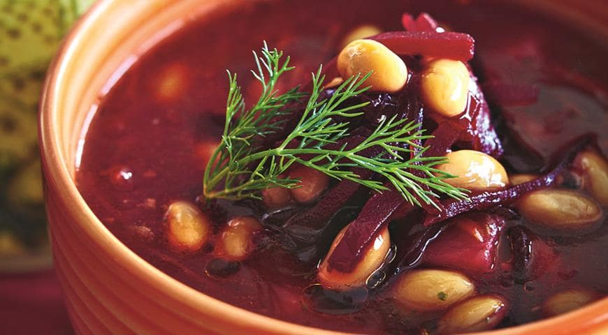

Борщ – це улюблена їжа всіх дорослих людей. Всі домашні кухарі дискутують на тему того, як зробити борщ смачним і насиченим.
У нашій країні борщ можна по праву назвати королем серед супів. Кожна господиня повинна вміти приготувати смачний борщ. У цій статті ми розповімо як варити борщ та поділимося з вами основними секретами приготування цього супу.
Рецептів борщу безліч, але всі їх об’єднує незмінний кисло-солодкий смак, яскравий червоний колір, присутність буряка і помідорів.
Користь борщу
Це вариво відіграє колосальну користь для людини. У ньому міститься велика кількість овочів, і, відповідно, вітамінів. Також його можна використовувати як дієтичний засіб. Овочі благотворно впливають на травлення.
Борщ може завдати шкоди організму тільки в деяких випадках, коли в страву додати кислі продукти. Розберемо користь кожного овоча в цілому.
- Буряк сприяє нормальній роботі кишківника, виводить з організму токсини і заряджає людину енергією, допомагає при підвищеному тиску.
- Квасоля, яку додає в борщ практично кожна домогосподарка, допомагає при діабеті й завдяки їй людина не набирає зайву вагу. Морква грає важливу роль для людини при погіршенні зору.
- Морква грає важливу роль для людини при погіршенні зору.
- Картопля приводить в норму діяльність серця.
- Капуста допомагає при очищенні кишківника.
- Цибуля і часник– це джерело вітамінів, помічники при простудних захворюваннях.
При захворюванні підшлункової залози потрібно їсти пісні борщі та й то, тільки якщо дозволить лікуючий лікар
Як варити борщ смачно
Як вже стало зрозуміло, борщ за своїм складом є складним багатокомпонентним супом. За технологією приготування він відноситься до звичайних заправних супів – частина інгредієнтів готується (смажиться, запікається, пасерується) ще до закладки в борщ. Загальний час приготування справжнього борщу в разі використання м’яса становить 2-3 години.
Хитрощі приготування борщу
Давайте дізнаймося про деякі основні хитрощі, які допоможуть приготувати борщ смачно.
- Головний секрет смачно приготованого борщу це його бульйон. У нього варто додати не тільки кісточку, але і не пошкодувати м’яса
Суп вийде більш насиченим і ароматним, якщо варити бульйон довше, рекомендований час – 2 години. Якщо вода почала сильно википати, потрібно додати в каструлю трохи кип’яченої води. Але не використовуйте холодну воду – смак і аромат борщу будуть остаточно зіпсовані. - Необхідно додавати овочі в правильній послідовності. Спочатку вариться картопля, капуста, а потім додається пасеровка з овочів. Нарізати картоплю потрібно великими шматками й вибирати правильну картоплю, яка при варінні не розварюється.
- Багато господинь задаються питанням: смажити або варити овочі? Деякі люди не люблять варені овочі, тому цибулю, моркву прожарюють і додають томатну пасту. Але дехто варить овочі: цибулю потрібно кидати в каструлю до картоплі, а моркву додають під час додавання картоплі. Найкращий спосіб – томити овочі, готувати їх на дуже повільному вогні.
- Елементарні прянощі, які потрібно додавати в борщ – це лавровий лист і чорний перець.
- Більшість господинь додають в це традиційне блюдо оцет. Але це не найкорисніше додавання, яке варто використовувати. Додати можна замість нього квашену капусту, лимонний сік або розсіл з капусти.
- Переходимо до буряка. Найгірший спосіб – це варити буряк під час варіння бульйону. Для того, щоб буряк не втратив колір, його потрібно побризкати лимонкою. Для приготування борщу ви можете використовувати як відварний буряк, так і тушкований, пасерований і навіть сирий. Борщ вийде красивого яскравого кольору, якщо ви відварите буряк в шкірці, окремо від інших овочів. Якщо ви віддаєте перевагу тушкованим бурякам, тушкуйте його окремо від інших овочів.
- Якщо додати в суп трохи бурякового або хлібного квасу, можна надати йому кислинку, яку багато хто так любить.
- Першою додаю в бульйон картоплю. Якщо ви попередньо її обсмажите, суп вийде більш насиченим і наваристим. Як тільки картопля буде наполовину готова, додайте в бульйон капусту. Після цього ні в якому разі не прикривайте суп кришкою, щоб не зіпсувати аромат страви.
- Додайте в борщ порізаний соломкою солодкий перчик – це зробить ваш суп ще більш корисним і вітамінізованим.
- Якщо ви готуєте грибний борщ, гриби підсмажте разом з іншими овочами.
- Томати або томатну пасту потрібно додавати в суп хвилин за 15 до його готовності, одночасно з ними додайте і прянощі. Часник додають в самому кінці приготування супу.
- Перед тим, як подати борщ на стіл, дайте йому час настоятися – 20-25 хвилин буде достатньо.
- Якщо у вас вийшов не наваристий борщ, то туди можна кинути вершкове масло.
Як варити борщ: рецепти приготування
Класичний рецепт борщу з яловичиною
Як відомо, борщ це будь-який суп з буряком. Залежно від країни та місцевості, традиції варіння борщу можуть дуже сильно відрізнятися. Розповімо як варити борщ за класичним рецептом з яловичиною.
Інгредієнти:
- Яловичина – 700 гр
- Картопля – 4 шт.
- Морква – 1 шт.
- Буряк – 1 шт.
- Капуста – ¼ великого качана
- Цибуля – 1 великий
або 2 дрібних - Томатна паста – 2 ст. л
- Оцет столовий – 1 ст. ложка
- Часник – 1 зубчик
Спосіб приготування:
- Готуємо всі необхідні овочі. Цибулю, моркву, картоплю і буряк очищаємо від шкірки. Капусту миємо й прибираємо зайве листя. М’ясо варимо у воді 1,5 години.
- Нарізаємо картоплю, заливаємо водою і варимо 15 хвилин. Додаємо 2 чайні ложки солі й розминаємо частково товкачем, щоб частина картопляного крохмалю потрапила в бульйон і він став густим.
- Нарізаємо капусту і додаємо до картоплі.
- Поки капуста вариться в каструлі разом з картоплею, можна приготувати засмажку. Для цього нарізаємо цибулю і моркву.
- Обсмажуємо цибулю і моркву в соняшниковій олії. Потрібно уважно стежити щоб цибуля не підгоріла, тому потрібно постійно помішувати для рівномірного прожарювання.
- Додаємо буряк і трохи додаємо вогонь. Додаємо столову ложку оцту і тушкуємо весь час помішуючи.
- Додаємо 2 столові ложки томатної пасти, добре розмішуємо і тушкуємо разом з овочами 5 хвилин.
- Поки засмажка готується, нарізаємо відварне м’ясо шматочками і відправляємо в каструлю до картоплі з капустою.
- Додаємо зажарку і варимо 15 хвилин під кришкою.
- Додаємо перець горошком, лавровий лист і часник.
Пісний борщ з квасолею
Не всі можуть вживати наваристий борщ, але це не означає, що потрібно відмовитися від улюбленої страви. Розповідаємо як варити борщ пісний з квасолею.
Інгредієнти:
- Буряк – 2 шт.
- Рослинна олія – 2 ст. л.
- Цукровий пісок – 2 ч. л
- Оцет – 1 ч. л.
- Цибуля – 1 шт.
- Морква – 1шт.
- Томатна паста – 2 ст. л.
- Капуста – 1/2.
- Лавровий лист – 2 шт.
- Часник – 3 зубчики.
- Консервована квасоля – 300 г.
- Сіль, мелений чорний перець – за смаком, кріп для прикраси.
Спосіб приготування:
- Буряк очистіть і натріть на крупній тертці. У сковороді розігрійте 1 стол. ложку олії, покладіть буряк, додайте цукор, влийте 150 мл води, оцет і тушкуйте на дуже маленькому вогні 25 хв.
- Цибулю накришити, моркву натріть на крупній тертці. У каструлі обсмажте їх на олії до золотистого кольору, додайте томатну пасту і смажте 5 хв. Потім додайте 2,5 л води і варіть 5 хв.
- Часник очистіть і пропустіть через прес. Капусту наріжте соломкою, додайте в каструлю з овочами, покладіть лавровий лист і варіть 10 хв. Потім додайте тушкований буряк, консервовану квасолю, часник, пропущений через прес, посоліть, поперчіть і доведіть до кипіння.
- Борщ розлийте по тарілках, в кожну покладіть кріп і подайте на стіл.
Як варити борщ в мультиварці
А Ви готували український борщ в мультиварці? Мультиварка значно полегшує роботу з приготування багатьох страв, а по корисним властивостям і смаковим якостям страви з мультиварки мають безперечну перевагу!
Український борщ – це одне з основних перших страв в Україні. Однак, популярний борщ і в багатьох інших країнах, завдяки чому з’явилося дуже багато різноманітних рецептів і варіантів його приготування.
Головною складовою будь-якого борщу є харчовий буряк, завдяки якому борщ набуває насичений червоний колір. Інші складові можуть змінюватися і залежать від багатьох причин – від місцевості, в якій готують борщ, від наявності інгредієнтів в даний сезон від традицій народу. Іншими компонентами борщу можуть бути: картопля, капуста, морква, цибуля, часник, гриби, квасоля, риба, болгарський перець, кабачки і навіть яблука.
За старих часів борщ був їжею простих селян і готувався з овочів з додаванням сала і часнику, і тільки у свята на м’ясному бульйоні. Свою назву борщ отримав від старослов’янського назви буряка “б’рщь”. А з’явилося це блюдо швидше за все на території Київської Русі, тому український борщ є найпопулярнішим і найсмачнішим з усіх інших різновидів.
Подають український борщ зі сметаною або часниковими пампушками.
Інгредієнти:
- Вода – 2 літри.
- Свинячі реберця – 450 г
- Буряк – 1 шт.
- Цибуля – 1 шт.
- Морква – 1 шт.
- Картопля – 4 шт.
- Капуста білокачанна – 350 г.
- Часник – 2 зубчики.
- Томатний сік – 1 склянка.
- Соняшникова олія.
- Сіль – 1,5 чайн. ложки.
- Щіпка чорного меленого перцю.
- Зелень петрушки.
Спосіб приготування:
- Реберця промити гарненько в холодній воді. У чашу мультиварки налити рослинну олію. Обсмажити реберця протягом 15 хвилин на програмі “Жарка” при температурі за замовчуванням (120 градусів), зрідка помішуючи.
- Буряк помити, очистити від шкірки і натерти на крупній тертці.
- Морквину ретельно відмити, очистити й натерти на тертці.
- Ріпчасту цибулю почистити від лушпиння і нарізати невеликими кубиками.
- Додати овочі до реберець і обсмажувати все разом в тому ж режимі протягом ще 15 хвилин при температурі 160 градусів, щоб овочі й м’ясо трохи підсмажилися. Періодично помішувати, щоб не підгоріли.
- Картоплю помити, очистити й нарізати кубиками.
- Очищені зубчики часнику, пропустити крізь прес.
- Коли овочі з реберцями підсмажилися, додати воду, томатний сік, картоплю, часник, сіль, перець та інші спеції на ваш розсуд.
- Включити програму “Тушкування” на 30 хвилин.
- Нашаткувати капусту.
- Зелень петрушки дрібно порубати.
- По закінченню 30 хвилин додати нашатковану капусту й подрібнену зелень, досолити при необхідності. Включити на мультиварці режим “Тушкування” ще на 30 хвилин.
Зверніть увагу! При вищевказаному способі варіння капуста залишається хрусткою, якщо Ви віддаєте перевагу м’якій капусті в борщі, тоді можна спростити процес і всі продукти закласти відразу і включити програму “Тушкування” на 1 годину.
Даємо борщу настоятися кілька хвилин і подаємо зі сметаною. Тепер ви знаєте як варити борщ. Смачного!